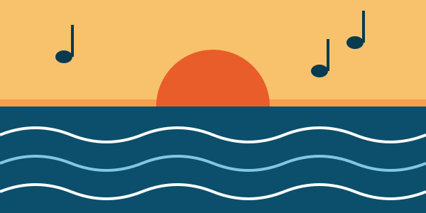
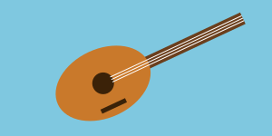

Roque Nublo Sound

Grupo grancanario que mezcla el rock con ritmos tradicionales.
Cuándo y dónde
Escenario Principal, 21:00 h.
«Música, mar y cultura en Gran Canaria»
Arinaga (Agüimes) · Sábado 17 de julio de 2027
El Festival Brisa Atlántica se celebra en la costa de Arinaga, en el municipio de Agüimes. Durante un día hay conciertos, talleres y actividades para toda la familia.
Nuestros objetivos son:
Más información del municipio en la web del Ayuntamiento de Agüimes.

Grupo grancanario que mezcla el rock con ritmos tradicionales.
Escenario Principal, 21:00 h.

Canciones populares canarias con timple y guitarra.
Escenario Playa, 19:00 h.
Aprende ritmos básicos con tambores. No hace falta experiencia.
Carpa de Talleres, 17:00 h.
| Hora | Actividad | Lugar | Duración |
|---|---|---|---|
| 12:00 | Apertura | Plaza del Paseo | 30 min |
| 13:00 | Taller de cocina canaria | Carpa de Talleres | 1 h 30 min |
| 16:00 | Cuentacuentos infantil | Zona Familiar | 45 min |
| 17:00 | Taller de percusión | Carpa de Talleres | 1 h |
| 19:00 | Concierto de Timple y Mar | Escenario Playa | 1 h |
| 21:00 | Concierto de Roque Nublo Sound | Escenario Principal | 1 h 30 min |
El formulario recoge tu nombre, correo, teléfono, actividad y horario preferidos, servicios de interés y comentarios. Se usan solo para gestionar tu inscripción y contactar contigo.